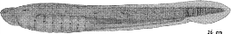

Family
Petromyzontidae (Lampreys)
Species
Ichthyomyzon castaneus (Girard, 1858)
Common Name
Chestnut Lamprey
Distribution
Where found: Lake Michigan, Lake Huron (?)
Native or non-native species: Non-native
Description
Egg (spawning to hatching)
Appearance and features
Shape: Elliptical
Other features: Demersal or non-adhesive
Attachment disc presence/absence: Does not exist
Spawning substrate location, features
Streams or creeks: Small streams or rivers (6.5-43m wide, 0.4-0.9m deep, current velocity 1m/s)
Spawning strategies
Redds or nesting: Deposited in redd, gravel redd (0.6m x 1m x 5cm) with long axis parallel to current or redds are ill-defined in gravel or sand
Spawn in structure: Rarely under logs, stumps or bushes
Other Spawning features
Spawning season: April, May or June
Water temperature at spawning (degC): 16.0-22.0 degC
Incubation
Incubation period (days): 9
Incubation temperature (degC): 18 degC
Yolk Sac Larvae - YSL (hatching to complete absorption of yolk)
Appearance and features (body)
Body shape: Elongate, eel-shaped
Gill openings on each side: Multiple (7)
Adhesive disc on snout: Absent
Chin barbels: Absent or not well developed
Appearance and features (head and mouth)
Eye: Small
Eye spot: Visible
Larvae (complete absorption of yolk to development of full complement of adult fin rays and absorption of finfold)
Appearance and features (body)
Body shape: Elongate, eel-shaped
Gill openings on each side: Multiple (7)
Chin barbels: Absent or not well developed
Appearance and features (head and mouth)
Eyes: Small (3-4% Total Length TL) or eyes covered with skin
Directional position of mouth: Sucking, disc shaped
Jaws and maxilla: No jaw
Larvae Myomeres
Myomere relative size or prominence: Relatively prominent in tail
Pigmentation
Body: Pigmented, Pigment increases as size increases
Fins and finfold: Chromatophores usually absent from caudal finfolds, Chromatophores usually absent from dorsal finfolds
Additional Larval features based on size
20-40mm
Myomeres: relatively prominent in tail
Pigmentation: tail pigmentation confined to notochord; chromatophores absent from dorsal and caudal finfolds
40-60mm
Fins: dorsal fin often slightly indented but never with a deep notch to the trunk
60mm and larger
Myomeres: relatively prominent in tail
Pigmentation: lateral line organs darkly pigmented
Fins: dorsal fin distinctly notched to trunk, if a low membrane connects lobes it contains no fin rays
Family Notes
This family contains about 30 species in 8 genera. They occur in temperate marine and freshwater systems of the northern and southern hemispheres. There are five species in three genera in the Great Lakes region. Lampreys are eel-like fishes which lack jaws but have an oral sucking disc armed with horny teeth. They also lack paired fins. The skeleton is cartilaginous. There is a single, median nostril and seven pairs of gill openings.
Adult Great Lakes lampreys primarily inhabit streams, although the non-endemic sea lamprey, Petromyzon marinus, is typically found in the lakes proper. They all spawn in the spring and summer in shallow streams. Larvae, called ammocoetes, lack the toothed sucking disc of adults. Their eyes are covered with skin. Ammocoetes burrow in sand, mud or organic debris where they live for several years before transforming into juveniles. Young ammocoetes of all species tend to be less pigmented than older ammocoetes (V. D. Vladykov, personal communication).
The sea lamprey is widespread in the Great Lakes, though not native. It has been the subject of great concern to commercial and sport fisheries of the region because of its parasitism of valued fishes. Ichthyomyzon castaneus and I. unicuspis are parasitic species smaller than the sea lamprey, and giant specimens of Lampetra appendix (Lethenteron appendix) are thought to be parasitic (Manion and Purvis 1971). Only six specimens of giant L. appendix have been collected over the past 20 years. Vladykov and Kott (1980) present several hypotheses which attempt to explain the existence of these peculiar forms. Adults of the generally non-parasitic species (I. fossor and L. appendix) live for only a few months (through winter), spawn, then die (Vladykov 1949).
